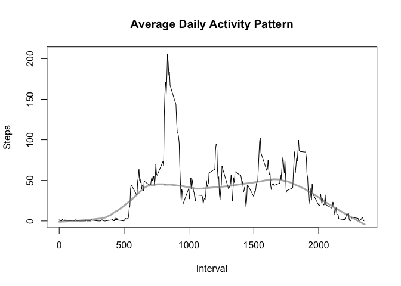
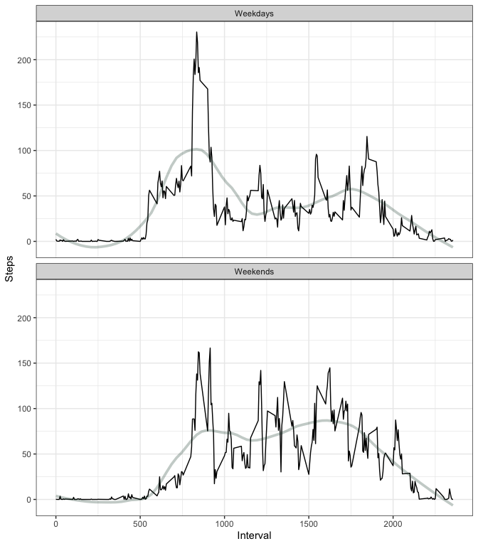

Project 1, Reprodicible Research
Jim McGuinness
5/7/2020
The assignment is broken down into multiple parts. The instructions for each are reproduced below immediately followed by my proposed solution.
Part 1: Loading and preprocessing the data
Show any code that is needed to …
- Load the data (i.e.,
read.csv()) - Process/transform the data (if necessary) into a format suitable for your analysis
Solution:
data.raw <- read.csv("activity.csv", colClasses=c("double", "Date", "integer"))
str(data.raw)## 'data.frame': 17568 obs. of 3 variables:
## $ steps : num NA NA NA NA NA NA NA NA NA NA ...
## $ date : Date, format: "2012-10-01" "2012-10-01" ...
## $ interval: int 0 5 10 15 20 25 30 35 40 45 ...Note: by specifying the colClasses parameter, transformation to Date types is done while the data is being read in.
Part 2: What is mean total number of steps taken per day?
For this part of the assignment, you can ignore the missing values in the dataset.
- Calculate the total number of steps taken per day
Solution:
library(dplyr)data.daily <-
data.raw %>%
group_by(date) %>%
summarize_at(vars(steps), list(steps = sum), na.rm=TRUE)
head(data.daily)## # A tibble: 6 x 2
## date steps
## <date> <dbl>
## 1 2012-10-01 0
## 2 2012-10-02 126
## 3 2012-10-03 11352
## 4 2012-10-04 12116
## 5 2012-10-05 13294
## 6 2012-10-06 15420- If you do not understand the difference between a histogram and a barplot, research the difference between them. Make a histogram of the total number of steps taken each day
Solution:
hist(data.daily$steps, breaks=8, xlim=c(0,25000), ylim=c(0,20),
xlab="Steps per Day", main="Daily Steps", col="green", border="darkgreen")
- Calculate and report the mean and median of the total number of steps taken per day
Solution:
summary(data.daily$steps)## Min. 1st Qu. Median Mean 3rd Qu. Max.
## 0 6778 10395 9354 12811 21194So the mean() of the steps taken is 9354.2295082 while the median() is 1.039510^{4}.
Part 3: What is the average daily activity pattern?
- Make a time series plot (i.e.,
type="l") of the 5-minute interval (x-axis) and the average number of steps taken, averaged across all days (y-axis)
Solution:
data.interval <-
data.raw %>%
group_by(interval) %>%
summarize_at(vars(steps), list(steps.avg = mean), na.rm=TRUE)
head(data.interval)## # A tibble: 6 x 2
## interval steps.avg
## <int> <dbl>
## 1 0 1.72
## 2 5 0.340
## 3 10 0.132
## 4 15 0.151
## 5 20 0.0755
## 6 25 2.09summary(data.interval$steps.avg)## Min. 1st Qu. Median Mean 3rd Qu. Max.
## 0.000 2.486 34.113 37.383 52.835 206.170with(data.interval, {
plot(interval, steps.avg, type="l", xlab="Interval", ylab="Steps",
main="Average Daily Activity Pattern");
lines(lowess(interval, steps.avg, f=0.3), col=rgb(0.5, 0.5, 0.5, 0.6), lwd=3)
})
- Which 5-minute interval, on average across all the days in the dataset, contains the maximum number of steps?
Solution:
interval.max <- data.interval[data.interval$steps.avg == max(data.interval$steps.avg),]
interval.max## # A tibble: 1 x 2
## interval steps.avg
## <int> <dbl>
## 1 835 206.So the maximum average number of steps is 206.1698113 which is taken in the interval 835.
Part 4: Imputing missing values
Note that there are a number of days/intervals where there are missing values (coded NA). The presence of missing days may introduce bias into some calculations or summaries of the data.
- Calculate and report the total number of missing values in the dataset (i.e. the total number of rows with
NAs)
Solution:
summary(complete.cases(data.raw))["FALSE"]## FALSE
## 2304So there are 2304 NA values, all in the steps data.
- Devise a strategy for filling in all of the missing values in the dataset. The strategy does not need to be sophisticated. For example, you could use the mean/median for that day, or the mean for that 5-minute interval, etc.
Solution:
I elect to use the mean of the 5-minute interval values in filling in the missing steps data.
- Create a new dataset that is equal to the original dataset but with the missing data filled in.
Solution:
data.complete <-
merge(data.raw, data.interval, by.x="interval", by.y="interval") %>%
mutate(steps.complete = ifelse(is.na(steps), steps.avg, steps)) %>%
select(date, interval, steps.complete) %>%
arrange(date, interval)
str(data.complete)## 'data.frame': 17568 obs. of 3 variables:
## $ date : Date, format: "2012-10-01" "2012-10-01" ...
## $ interval : int 0 5 10 15 20 25 30 35 40 45 ...
## $ steps.complete: num 1.717 0.3396 0.1321 0.1509 0.0755 ...tail(data.complete)## date interval steps.complete
## 17563 2012-11-30 2330 2.6037736
## 17564 2012-11-30 2335 4.6981132
## 17565 2012-11-30 2340 3.3018868
## 17566 2012-11-30 2345 0.6415094
## 17567 2012-11-30 2350 0.2264151
## 17568 2012-11-30 2355 1.0754717- Make a histogram of the total number of steps taken each day and Calculate and report the mean and median total number of steps taken per day. Do these values differ from the estimates from the first part of the assignment? What is the impact of imputing missing data on the estimates of the total daily number of steps?
Solution:
data.daily.complete <-
data.complete %>%
group_by(date) %>%
summarize_at(vars(steps.complete), list(steps.complete = sum))
head(data.daily.complete)## # A tibble: 6 x 2
## date steps.complete
## <date> <dbl>
## 1 2012-10-01 10766.
## 2 2012-10-02 126
## 3 2012-10-03 11352
## 4 2012-10-04 12116
## 5 2012-10-05 13294
## 6 2012-10-06 15420hist(data.daily.complete$steps.complete, breaks=8, xlim=c(0,25000), ylim=c(0,25),
xlab="Steps per Day", main="Daily Steps (Complete Data)", col="green", border="darkgreen")
abline(v=mean(data.daily.complete$steps.complete), lty="dashed", col="blue")
abline(v=median(data.daily.complete$steps.complete), lty="solid", col="red")
The median and the mean are almost identical (about 10766), probably because the NA-value days turned out to be the most prevelant and therefore overshadowed actual values. Consequently the guesstimation of missing values obscured actual values. I think the lesson learned is that missing data should simply be excluded and not interpolated. On a positive note, the data clusters very nicely around 10.7K steps a day. But let’s check for differences vetween weekdays and weekends …
Part 5: Are there differences in activity patterns between weekdays and weekends?
For this part the weekdays() function may be of some help here. Use the dataset with the filled-in missing values for this part.
- Create a new factor variable in the dataset with two levels – “weekday” and “weekend” indicating whether a given date is a weekday or weekend day.
Solution:
library(lubridate)data.complete.wdays <-
data.complete %>%
mutate(day.type=ifelse(wday(data.complete$date) %in% c(1,7), "weekend", "weekday"))
head(data.complete.wdays)## date interval steps.complete day.type
## 1 2012-10-01 0 1.7169811 weekday
## 2 2012-10-01 5 0.3396226 weekday
## 3 2012-10-01 10 0.1320755 weekday
## 4 2012-10-01 15 0.1509434 weekday
## 5 2012-10-01 20 0.0754717 weekday
## 6 2012-10-01 25 2.0943396 weekday- Make a panel plot containing a time series plot (i.e.
type="l") of the 5-minute interval (x-axis) and the average number of steps taken, averaged across all weekday days or weekend days (y-axis). See the README file in the GitHub repository to see an example of what this plot should look like using simulated data.
Solution:
data.interval.wdays <-
data.complete.wdays %>%
filter(day.type=="weekday") %>%
group_by(interval) %>%
summarize_at(vars(steps.complete), list(steps.complete = mean))
head(data.interval.wdays)## # A tibble: 6 x 2
## interval steps.complete
## <int> <dbl>
## 1 0 2.25
## 2 5 0.445
## 3 10 0.173
## 4 15 0.198
## 5 20 0.0990
## 6 25 1.59data.interval.wkend <-
data.complete.wdays %>%
filter(day.type=="weekend") %>%
group_by(interval) %>%
summarize_at(vars(steps.complete), list(steps.complete = mean))
head(data.interval.wkend)## # A tibble: 6 x 2
## interval steps.complete
## <int> <dbl>
## 1 0 0.215
## 2 5 0.0425
## 3 10 0.0165
## 4 15 0.0189
## 5 20 0.00943
## 6 25 3.51library(scales)
with(data.interval.wdays, {
plot(interval, steps.complete, type="l", col="orange", xlab="Interval", ylab="Steps",
main="Average Daily Activity Pattern, Weekdays vs. Weekends");
lines(lowess(interval, steps.complete, f=0.2), col=rgb(1.0, 0.647, 0.0, 0.25), lwd=3)
})
with(data.interval.wkend, {
lines(interval, steps.complete, type="l", col="red", xlab="", ylab="", main="");
lines(lowess(interval, steps.complete, f=0.2), col=rgb(1.0, 0.0, 0.0, 0.25), lwd=3)
})
legend("topright", legend=c("weekdays", "weekends"),
col=c("orange", "red"), lty=1, cex=0.8)
It appears that on weekdays, most of the walking occurs at 8:30 am and pre-dinner, whereas on the weekends the walking is much more evenly dispersed throughout the day.